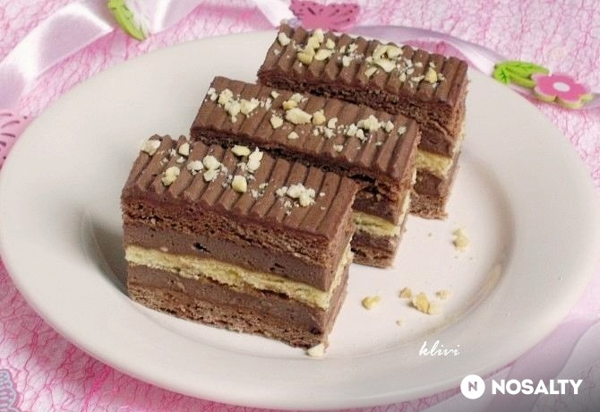
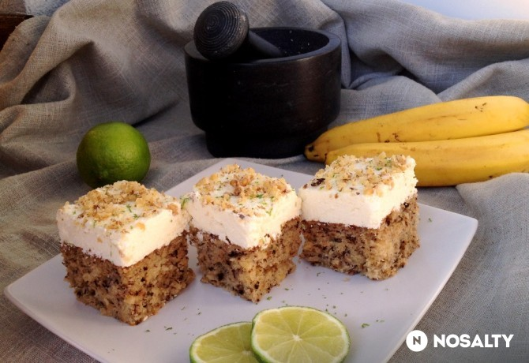

Sütemények receptei
A legjobb sütemények egy helyen
Vanella szelet
Tömör gyönyör

A család kedvenc süteménye, amit már évek óta szinte hetente megcsinálok. Régebben egy másik tészta recepttel készítettem, de kaptam egy másik receptet és annak a tésztája finomabb volt. Így azóta a két sütemény kombinációjaként sütöm. Nagyon finom és szerintem gyorsan el is készíthető.
Hozzávalók / 6 adag
A tésztához
- 6 db tojás
- 25 dkg cukor
- 1.25 dl víz
- 1.25 dl napraforgó olaj
- 20 dkg finomliszt
- 0.5 csomag sütőpor
- 2 ek cukrozatlan kakaópor
- 5 dkg dió (vágott)
- 1 ek vaj (a tepsi kikenéséhez)
- 1 evőkanál finomliszt (a tepsi kikenéséhez)
A krémhez
- 1 db tojás
- 5 ek cukor
- 7 dl tej
- 7 evőkanál finomliszt
- 2 csomag vaníliás cukor
- 25 dkg margarin
A tetejére
- 10 dkg tortabevonó
- 3 ek napraforgó olaj
Elkészítés
- A tojások sárgáját a cukorral habosra keverjük.
- Hozzáadjuk az olajat és a vizet, elkeverjük, majd a liszttel elkevert sütőport és a kakaóport is hozzáadagoljuk.
- Következik a vágott dió, végül a tojások felvert habja.
- Vajazott, lisztezett tepsibe öntjük. (Az én tepsim 29X38) cm. 180 fokra előmelegített sütőben kb. 25-30 percig sütjük. Célszerű tűpróbával ellenőrizni.
- Amíg sül, elkészítjük a krémet.
- A tojást a cukorral kikeverjük, hozzáadjuk a lisztet, és a tejet apránként adagolva csomómentesre keverjük. Sűrű krémet főzünk. Eléggé csomósodik, de a végén robotgéppel a csomókat simára ki tudjuk keverni. Még melegen beleszórjuk a vaníliás cukrokat.
- Ha kihűlt, a margarinnal összedolgozzuk. Fontos, hogy a margarin és a krém is szoba hőmérsékletű legyen.
- A kész krémmel bevonjuk a tésztát.
- A tetejére csokimáz kerül.
Pilóta szelet
Repülő mámor

Miért ne lehetne a pilóta kekszet süti formájában is elkészíteni... ez volt az alapgondolat. Lehet, és szerintünk nagyon finom lett :) Gyereknapra szeretettel!
Hozzávalók / 6 adag
A tésztához
- 40 dkg finomliszt
- 12 dkg porcukor
- 2 db tojássárgája
- 10 dkg vaj
- 175 g tejföl
- 20 g cukrozatlan kakaópor (1 evőkanál)
- 1 teáskanál sütőpor
A krémhez
- 2 tasak csokoládés pudingpor
- 5 dl tej
- 10 dkg vaj
- 12 dkg cukor
- 10 dkg nutella (2 nagy evőkanál)
Elkészítés
- A lisztben elkeverjük a porcukrot, sütőport és egy csipet sót. Belemorzsoljuk a vajat, és a tojássárgákkal valamint a tejföllel, könnyen gyúrható tésztát készítünk. Lehet, hogy kevesebb tejföl is elég, ez függ a liszt minőségétől.
- A tészta egyharmad részét félretesszük, a kétharmad részbe pedig beledolgozzuk a kakaót.
- Megsütjük a lapokat, 1 simát és 2 barnát. A lapokat ne süssük túl, mert kiszáradnak! 180 fokon kb. 8-10 perc. Sütés előtt szurkáljuk meg villával, hogy ne púposodjon fel.
- A krémhez folyamatos keverés mellett sűrűre főzzük a tejben a pudingport, még forrón belekeverjük a cukrot.
- Ha kihűlt a puding, a puha vajat és a nutellát gépi habverővel alaposan összedolgozzuk.
- Végül megtöltjük a lapokat. A krémből hagyhatunk a tetejére, de bevonhatjuk csokimázzal is. Másnap szeleteljük, addig a lapok bepuhulnak.
Kolibri szelet
Egyszerűen állati

Amerikában népszerű Kolibri tortát készítettem el süteményként. A tészta szaftos, zamatos és gyümölcsös a banán, ananász és dió hármastól. A krémet pedig a lime teszi különlegessé. Tömény sütemény, úgyhogy sokat nem lehet belőle megenni. Röviden így tudnám jellemezni: különleges tömör gyönyör. :)
Hozzávalók / 6 adag
A tésztához
- 4 közepes db banán (érett)
- 425 g ananászkonzerv (friss, érett ananász is lehet)
- 350 g finomliszt
- 50 g porcukor
- 3 db tojás
- 2 dl olívaolaj
- 1 teáskanál szódabikarbóna
- 1 kávéskanál fahéj
- 1 kávéskanál só
- 1 teáskanál vanília kivonat
- 50 g dió (eredeti recept szerint pekándió)
A krémhez
- 400 g mascarpone
- 200 g vaj (szobahőmérsékletű)
- 300 g porcukor
- 1 lime-ból nyert lime héja
- 1 lime-ból nyert limelé
- 1 teáskanál vanília kivonat
A tetejére
- 30 g dió (eredeti recept szerint pekándió)
- 0.5 lime-ból nyert lime héja
Elkészítés
A tészta
- Melegítsük elő a sütőt 180 fokra, és sütőpapírral béleljünk ki egy kb. 25x33 cm-es tepsit.
- Egy nagy tálba szitáljuk össze a lisztet, a cukrot, a szódabikarbónát, a fahéjat és a sót.
- A banánt törjük össze pépesre villával, az ananászt pedig nagyon apróra, szinte pépesre aprítsuk fel. A diót mozsárban törjük tetszés szerint darabosra.
- A gyümölcsökhöz keverjük hozzá a tojásokat, az olajat és a vaníliát, majd dolgozzuk össze a száraz hozzávalókkal. A legvégén forgassuk bele a feldarabolt diót is.
- Kanalazzuk a tésztát a formába, simítsuk el, és kb. 30-35 perc alatt süssük készre (tűpróba). Ha még nem sült meg, de a teteje már sötétbarna, kezd pirulni, akkor tegyünk rá egy alufóliát, és úgy süssük tovább. Hűtsük ki egy kicsit, és fordítsuk rácsra a további teljes kihűlésig.
A krém
- Amíg sül a tészta, géppel keverjük habosra először a vajat és a cukrot, majd keverjük hozzá a krémsajtot. Végül adjuk hozzá a vanília kivonatot, valamint egy lime reszelt héját és levét.
- Tegyük hűtőbe, amíg a tészta is kihűl, majd kenjük a tetejére.
Tetejére
- Szórjuk meg a tetejét dióval, és reszeljünk rá díszítésnek egy kis lime héjat.
- Tegyük hűtőbe, hogy megdermedjen a krém, és könnyen szeletelni tudjuk.